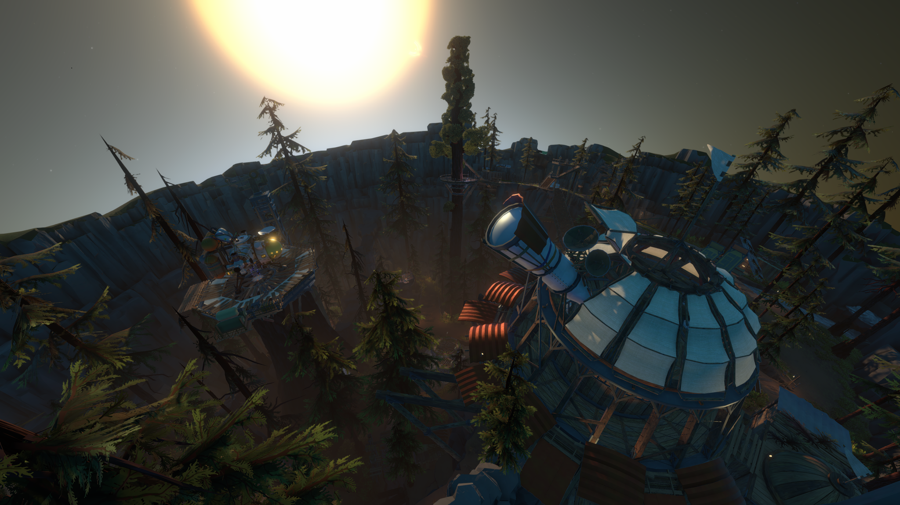

22 minutos para o fim do universo
Você é um Hearthiano, um membro de uma simpática raça alienígena que sonha em entender o universo
à sua volta, mas não por motivos bélicos ou corridas espaciais; eles apenas querem explorar, mais
simples do que se imagina, sentar ao redor de uma fogueira e relaxar. Esses curiosos seres de quatro
olhos colonizaram um planeta chamado Recanto Lenhoso e utilizaram
conhecimento avançado para construir uma base espacial com tecnologia retrofuturista.
Todo esse conhecimento científico foi passado de geração para geração por meio do estudo de uma antiga
e já extinta civilização chamada Nomai. Não se sabe muito sobre esse povo, mas foram deixados inúmeros
registros escritos e narrados com fatos e observações importantes sobre suas vidas, incluindo descobertas
ambiciosas que levaram seus sucessores a prosperar.